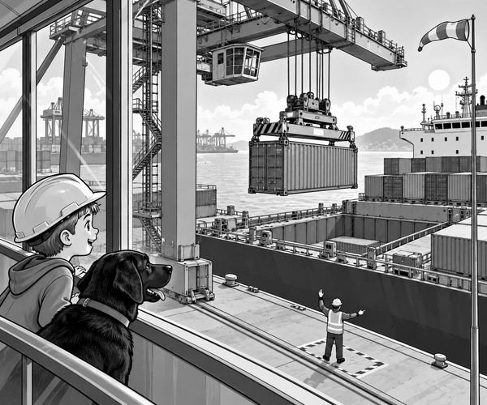

FICTION
Tom pressed his nose near the glass.
Below him, the port was waking up.
Little lorries hurried between tall stacks of containers.
A cargo ship called Sea Star waited by the quay.
Above it stood a crane as high as a tower.
Scout sat beside Tom in the visitor room.
His black tail thumped the floor.
“One box left,” said Dad.
A red lorry rolled towards the crane.
On its trailer was a grey container.
It held water pumps for an island after a storm.
Tom watched the crane's lifting frame come down.
It landed on top of the container.
Clunk! Clunk! Clunk! Clunk!
Four locks turned into the four top corners.
Container fact: Containers have strong corner holes. A crane's spreader locks into them so the box can be lifted safely.
The banksman raised one hand.
The lorry driver waited.
The crane operator lifted the container.
Up it went.
Then a sharp gust blew across the water.
The striped windsock snapped straight.
The container began to sway.
Scout's ears rose.
Tom held his breath.
The operator stopped the lift.
The box hung still above the empty quay.
“Why not hurry?” Tom asked.
“The ship is waiting!”
Dad shook his head.
“A swinging box is hard to place.”
“A good operator waits for safe wind.”
Crane fact: Port cranes have wind limits. Work can slow or stop when gusts are too strong.
The operator waited.
The banksman watched the windsock.
Everyone stayed in a safe place.
At last, the gust faded.
The windsock drooped.
The banksman gave the signal.
The crane moved again.
It carried the container over the ship.
The grey box looked tiny beneath the giant crane.
Slowly, it went down.
Lower.
Lower.
Clunk!
It fitted into the last empty space.
Twistlocks held its corners to the ship.
The spreader opened its four locks.
Then it rose away.
The banksman gave a big thumbs-up.
A deep horn boomed across the port.
Sea Star was ready to sail.
“The last lift was not the fastest,” Tom said.
Dad smiled.
“No. It was careful.”
Scout gave one proud bark.
The giant crane had finished the job.
1. What was inside the last container?
2. Why did the crane operator wait?
3. What held the container in place on the ship?